Report 4
Project 4: Diffusion Models
TJ DiMeola
Course: Computer Vision CSCI 581
Instructor: Dr. Hawk Wang
Date: December 9, 2025
The DeepFloyd IF diffusion model is going to be used in this project. DeepFloyd has been trained and released by Stability AI. It’s first stage generates images with size 64 x 64, the second stage take the outputs of the first stage and produces images with size 256 x 256.
DeepFloyd is a text-to-image model, which takes text prompts as input and outputs images based on the input text.
In this project, oftentimes the prompt “a high quality photo” is used. This means it the prompt is “null, “ without any specific meaning. Carrying the work out in this way is like asking the model to carry out unconditional generation.
Tasks and Deliverables
1. Text-to-image sampling with provided prompts
For each of the three provided text prompts (see Project_4.ipynb in the section of Sampling from the Model, promtps = [`an oil painting of a snowy mountain village`, ...]), generate an image using the DeepFloyd IF model and display both the prompt and the generated result.
Briefly comment on the quality of each output and how well it matches the prompt. Try at least two different values of num_inference_steps and mention anything you observe from changing this parameter.
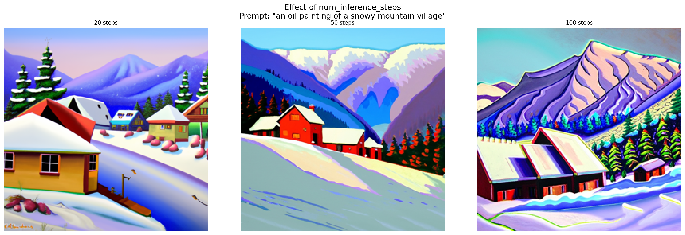
2. Random seed
Report the random seed you use. The same seed will be used for all parts of the project that involve image generation.
Random seed = 180, always.
1.1 Forward Process (Adding Noise)
The forward process gradually adds Gaussian noise to a clean image according to a predefined noise schedule. The goal here is to implement this process and visualize how the image degrades as noise increases. This forward process is defined as:

and is equivalent to,

Tasks
Implement a function noisy_im = forward(im, t) that takes an image and a timestep and returns the noisy version of the image. Apply your function to a test image at t = 250, 500, 750 and display the results.
Deliverables
Your noisy_im = forward(im, t) implementation. (code is part1_1.py)
F igure
1. Three
noisy images at the specified noise levels
[250,500,750][250,500,750].
igure
1. Three
noisy images at the specified noise levels
[250,500,750][250,500,750].
1.2 Traditional Denoising (Gaussian Blur)
Before using a diffusion model to denoise, a traditional method, Gaussian filtering, will be applied as implemented in Project 1 - Part 2(d).
Tasks
Take the three noisy images from Part 1.1 at timesteps t=250,500,750t=250,500,750 and for each, apply Gaussian filtering. Tune the blur parameters (kernel size or σ) to get the best denoised result for each timestep.
Deliverables
Figure 2: N
oisy
images at each timestep, t
= 250, 500, 750.
F
igure
3: Best Gaussian–denoised images for the same timesteps.
1.3 One-Step Denoising (Using a Pretrained UNet)
In this part, one-step denoising is carried out using a pretrained diffusion model (denoising UNet, stage_1.unet) . The UNet has been trained on a very large dataset of (x0,xt)(x0,xt) pairs of images and can thus be used to recover Gaussian noise from an image.
Tasks and Deliverables
Take the three noisy images from Part 1.1 at timesteps t=250,500,750t=250,500,750
Use
the pretrained UNet, predict the noise \hat{\epsilon}
and then denoise the image using the
equation:

F igure
4: The
original image, the noisy image, estimate of
the original (clean) image
igure
4: The
original image, the noisy image, estimate of
the original (clean) image
1.4 Iterative Denoising
The single denoising step can be speeded up by skipping steps using a list of strided_timesteps. A regular stride step (e.g. stride of 30) is introduced. During denoising, at the ith denoising step t = strided_timesteps[i], we want to get to t'=strided_timesteps[i+1] (from more noisy to less noisy). To do this, the following formula can be used:

Tasks and Deliverables
Using i_start = 10 Create strided_timesteps create a list of monotonically decreasing timesteps, starting at 990, with a stride of 30, eventually reaching 0. Also initialize the timesteps using the function stage_1.scheduler.set_timesteps(timesteps=strided_timesteps)
Complete the iterative_denoise function (code part1_4.py)
Figure 5: Here is the noisy
image ever
y
5th loop of denoising.
F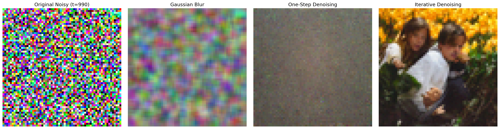 igure 6: Here are four examples of the predicted clean image from the noisy image (on far left), with Gaussing blurring, with single-step denoising, and with iterative denoising.
F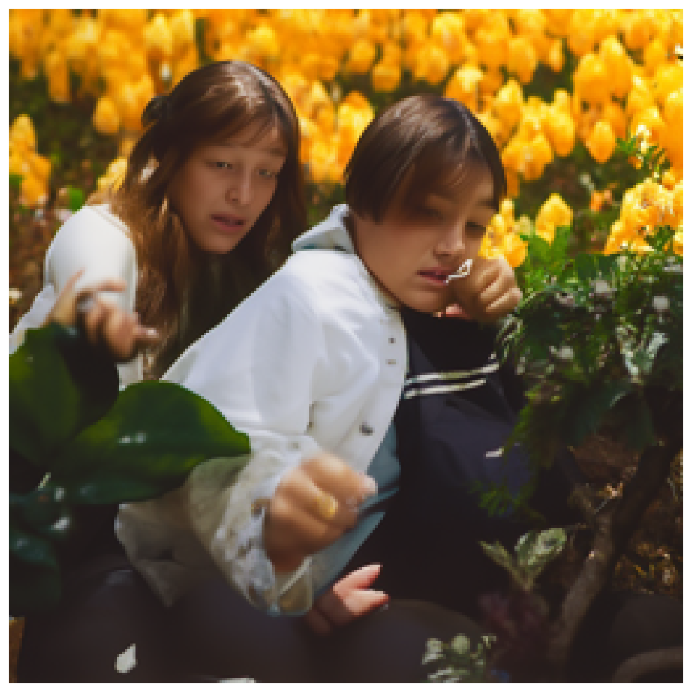
igure
7: The image after upping the iterations to 256x 256
2.1 Diffusion Model Sampling
In Part 1.4, we use the diffusion model to denoise an image. We can also use iterative_denoise
function to generate images from random noise. We can do this by setting i_start = 0
and passing in random noise. This effectively denoises pure noise.
Tasks and Deliverables
F
igure
8: Five generated images
2.2 Classifier Free Guidance
Tasks
For this part we implement the iterative_denoise_cfg function. This is identical to the iterative_denoise function but using classifier-free guidance (CFG). To get an unconditional noise estimate, we pass an empty prompt embedding to the diffusion model trained to predict an unconditional noise estimate when given an empty text prompt.
Deliverables
Implement the iterative_denoise_cfg function
F igure
9: Five images of "a high quality photo" with a CFG scale
of γ=7
igure
9: Five images of "a high quality photo" with a CFG scale
of γ=7
2.3 Image-to-image Translation
In Part 1.4, a real image has noise added to it, and then it is denoised. This effectively makes it possible to make edits to existing images. The more noise that is added, the greater the edit. This works because in order to denoise an image, the diffusion model must to some extent "hallucinate" new things, the model has to be "creative." Another way to think about it is that the denoising process "forces" a noisy image back onto the manifold of natural images.
In this part, we take the original test image, noise it a little, and force it back onto the image manifold without any conditioning. Effectively, we're going to get an image that is similar to the test image (with a low-enough noise level). This follows the SDEdit algorithm.
Deliverables
F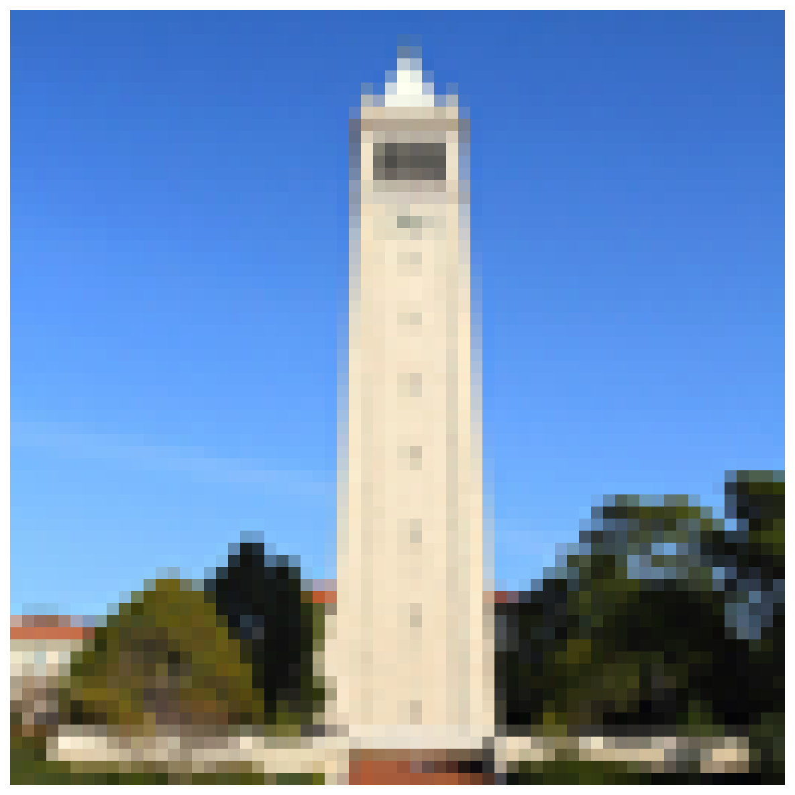
igure
10: Forward
process to get a noisy test image.
Figure 11: Edits of the
test image, using the given prompt at noise levels [1, 3, 5, 7, 10,
20] with text prompt "a high quality photo"
Edits of 2 of your own test images, using the same procedure.
F
igure
12: Original, noised, image
F igure
13: Edits of the original image
igure
13: Edits of the original image
F
igure
14: Second original noised image
F
 igure
15: Edits of the second original image
igure
15: Edits of the second original image
Part 3: Visual Anagrams (Graduate Students)
In this part, Visual Anagrams (CVPR 2024) will be implemented to create optical illusions with diffusion models. For example, the task is to create an image that looks like "an oil painting of an old man", but when flipped upside down will reveal "an oil painting of people around a campfire, as shown in the two images below."
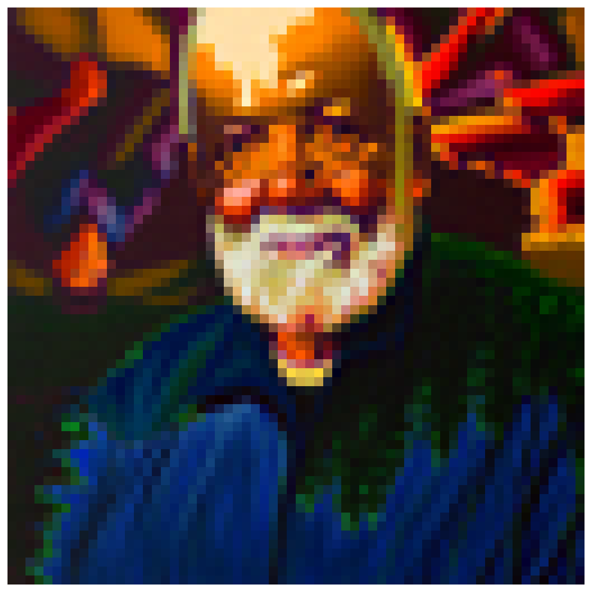
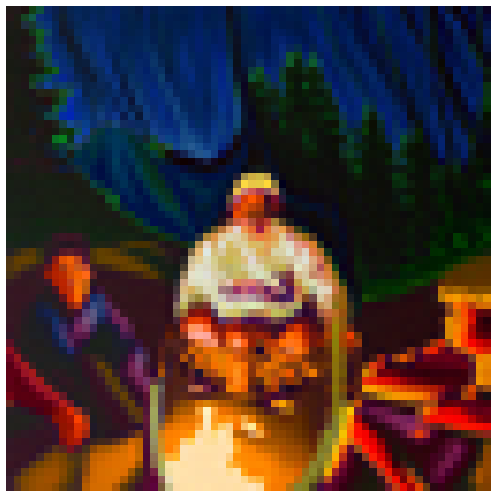
To do this, an image xt must be denoised at step t with the prompt to obtain noise estimate ϵ1. But at the same time, xtxt upside down, and denoised with a second prompt to get noise estimate ϵ2. ϵ2 can be flipped back, to make it right-side up, and the two noise estimates averaged. A reverse diffusion step is then carried out with the averaged noise estimate.
Deliverables
Implemented visual_anagrams function
F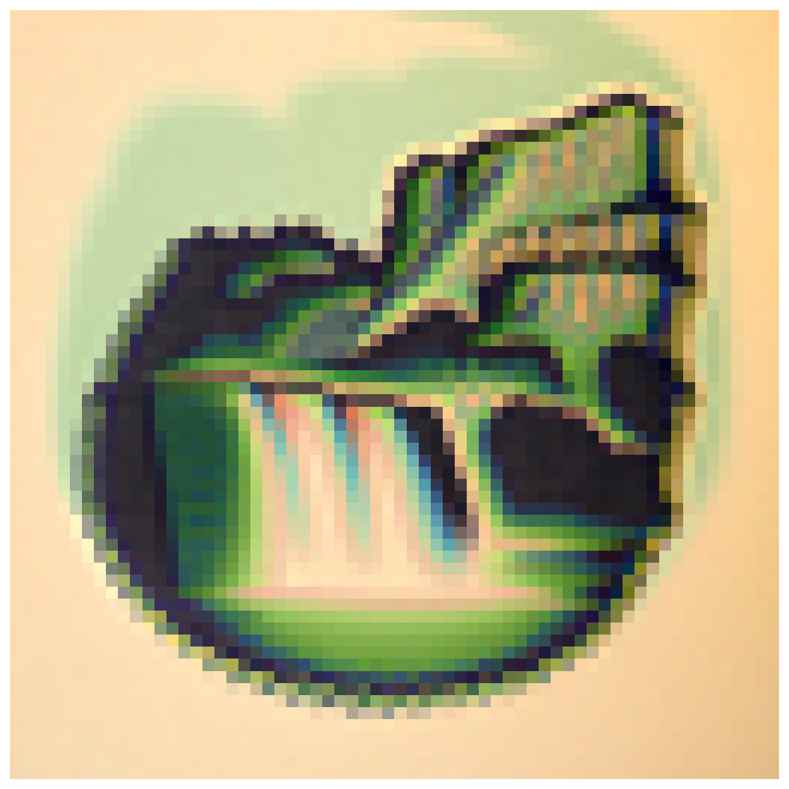
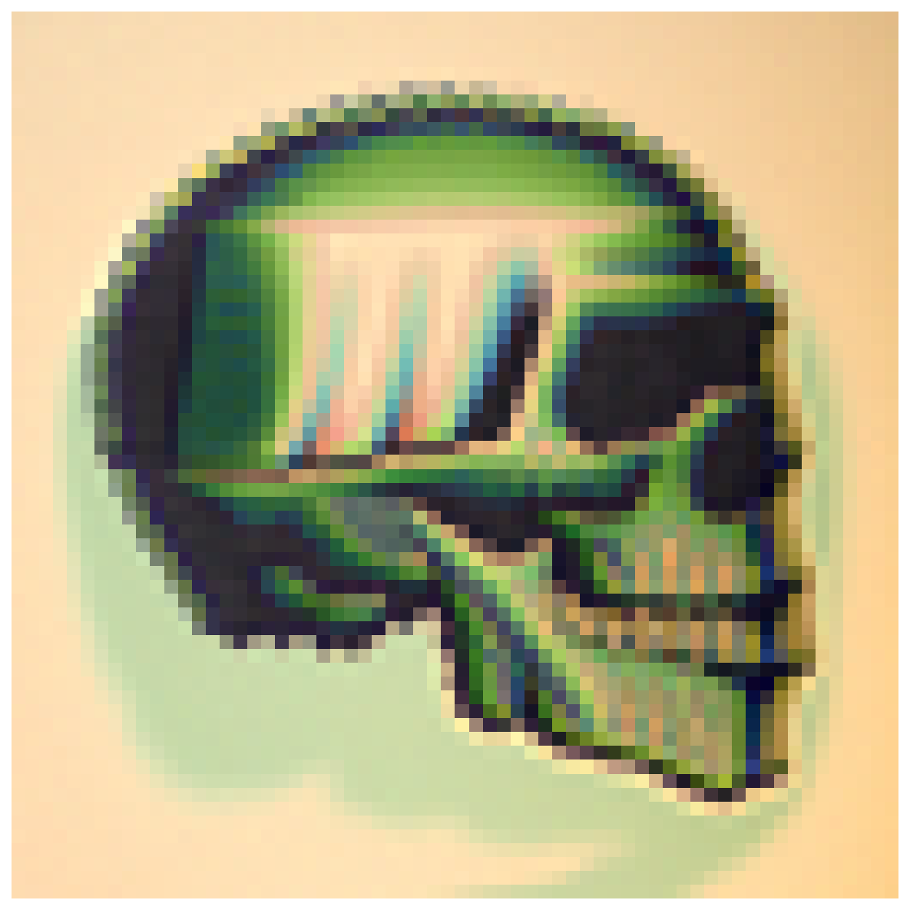
igure
16: The two prompts, “a lithograph of a skull', 'a lithograph of
waterfalls'
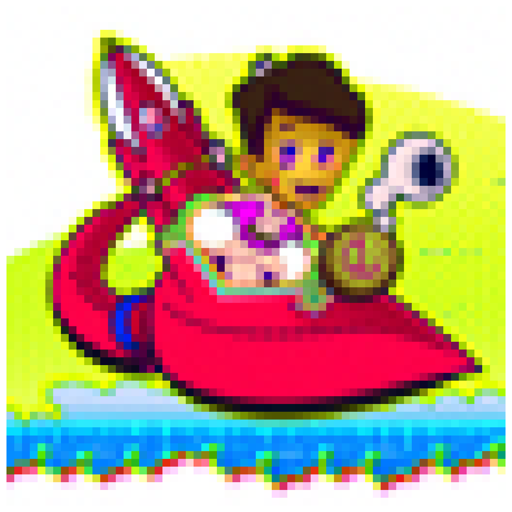

Figure 17: The two prompts, "a rocket ship", and "a pencil." Just not sure I’m seeing it though.
Given a noisy image z, we’d like to train a denoiser D_\theta such that it maps z to a clean image x. To do this, we can optimize over the following L2 loss:

F igure
18: The denoiser is implemented as a UNet. Unet architeture consists
of a few downsampling and upsampling blocks with skip connections as
shown below.
igure
18: The denoiser is implemented as a UNet. Unet architeture consists
of a few downsampling and upsampling blocks with skip connections as
shown below.
Using the UNet to Train a Denoiser
Given a noisy image z, the objective for this part is to will train the denoiser D_\theta such that it maps z to a clean image x. To do so, the L2 loss (shown above) is optimized. To train the denoiser, training data pairs (z,x) must be generated, where each x is a clean MNIST digit. For each training batch, z is generated from x using the following noising process:

Objective:
Train a denoiser to denoise noisy image z with \sigma = 0.5 applied to a clean image x
Dataset
and dataloader: Use the MNIST dataset
via torchvision.datasets.MNIST with
flags to access training and test sets.
Train only on the training set.
Shuffle the
dataset before creating the dataloader. Recommended batch size: 256.
Train over the dataset for 5 epochs.
Only noise the image batches when fetched from the dataloader so that in every epoch the network will see new noised images, improving generalization.
Model: Use
the UNet architecture defined in this section with recommended
hidden dimension D = 128.
Optimizer: Use Adam optimizer with learning rate of 1e-4.
Deliverables
F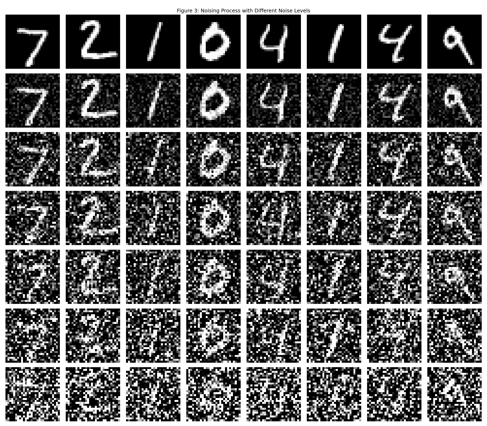
igure
19: A visualization of the noising process using \sigma = [0.0,
0.2,0.4,0.5,0.6,.8,1.0].
F igure
20: A training loss curve plot every few iterations during the whole
training process.
igure
20: A training loss curve plot every few iterations during the whole
training process.
F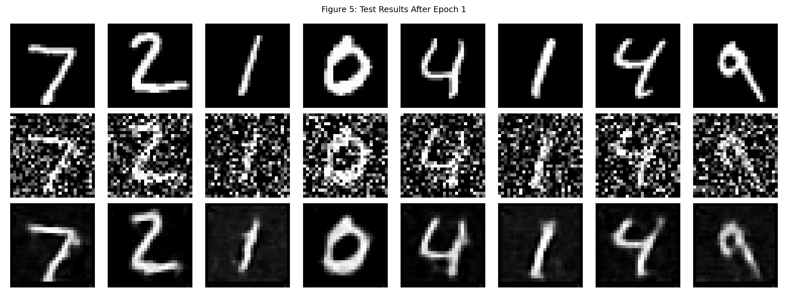

igure
21: Sample results on the test set after the first and the 5th epoch

Figure 22: Sample results on the test set with out-of-distribution noise levels after the model is trained. Keep the same image and vary \sigma = [0.0,0.2,0.4,0.5,0.6,0.8,1.0].
The UNet can be changed to predict the added noise \epsilon instead of the clean image x. Mathematically, these are equivalent since x = z - \sigma \epsilon. Thus, the original loss can be change into:

where
 is a UNet trained to predict noise.
is a UNet trained to predict noise.
For diffusion, we want to be able to sample a pure noise image \epsilon \sim \mathcal{N}(0, I)$and generate a realistic image x from the noise.
Training Objective
Add Time Conditioning to UNet
Train the Time Conditioned UNet
Add Class Conditioning to UNet
Train the Class Conditioned UNet
Deliverables
Time Conditioned Results:
Figure 23: T he
training loss curve plot for the time-conditioned UNet over the whole
training process.
he
training loss curve plot for the time-conditioned UNet over the whole
training process.
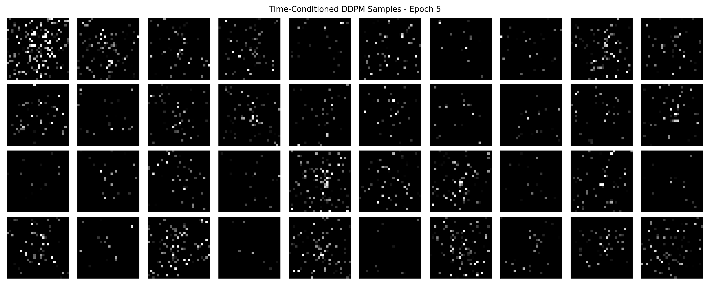
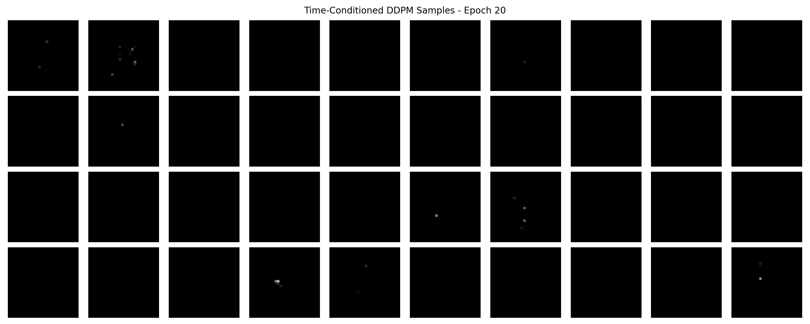
Figure 24: Sampling results for the time-conditioned UNet for 5 and 20 epochs. Generate 4 instances of each digit as the example shown above.
Class Conditioned Results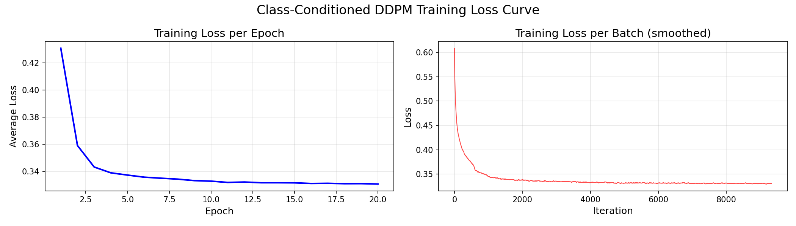
Figure 25: The training loss curve plot for the class-conditioned UNet over the whole training process.
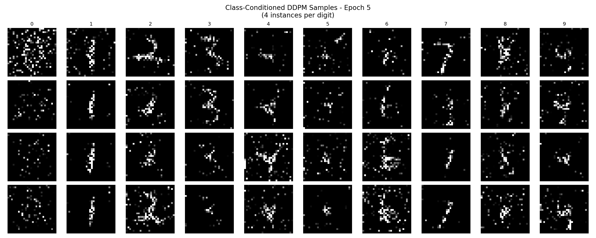
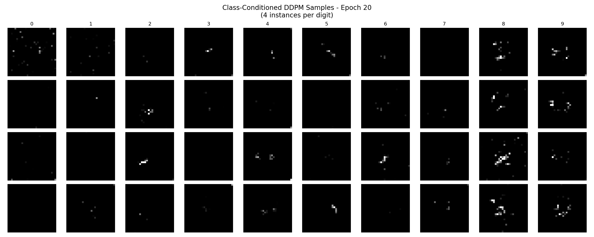
Figure 26: Sampling results for the class-conditioned UNet for 5 and 20 epochs with four instances of each digit as the example shown above.